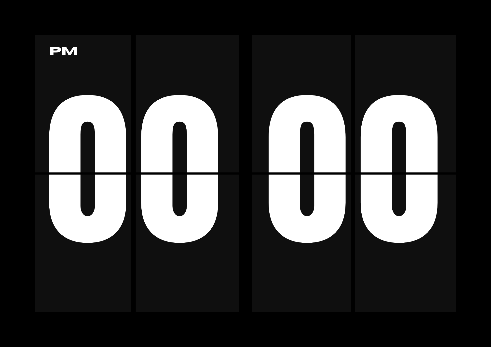

A flip-clock screen saver and fullscreen clock for Windows, Android and macOS. Free, open source, and it collects nothing.
Not a picture — that is the clock, running in your browser.
Latest release · all versions and release notes
Not just a window that sits there. The included installer registers it the way Windows expects, so it starts on idle like any other screen saver.
No analytics, no accounts, no telemetry, no network access at all. Your settings stay on your device. Nothing to opt out of.
On Android it holds a wake lock while open, so a phone on a charger works as a bedside clock instead of going dark.
12 or 24 hour, seconds on or off, date on or off, three colour themes, and sliders for digit size and weight.
Built with Flutter, so all three platforms render identically instead of drifting apart.
Read it, fork it, ship your own. The whole thing is on GitHub, including how the releases are built.

| Windows |
Extract the zip, right-click Install.ps1 and choose Run with PowerShell. It copies the app
into %LOCALAPPDATA% and sets it as your screen saver — no administrator rights, and only your own
account is affected. Uninstall.ps1 reverses it. Keep the folder together: the .scr needs the
files beside it.
|
|---|---|
| Android |
Install the .apk and allow installation from unknown sources when prompted. Sideloaded apps always
raise that warning — it is about where the file came from, not what is in it.
|
| macOS |
Unzip and drag the app into /Applications. It is not notarized by a paid Apple Developer account, so
Gatekeeper blocks the first launch. On macOS 14 and earlier, right-click the app and choose Open.
On macOS 15 and later, try to open it once, then go to System Settings → Privacy & Security
and click Open Anyway. Once only.
|
There is no Windows 32-bit or native ARM64 build: Flutter ships no Windows ARM64 SDK, and Windows on ARM runs the 64-bit build under emulation anyway. iOS is not distributed, and Android's system screen-saver slot is not used — the reasons for both are written up in the repository.
FlipTheClock! has no network permissions and makes no connections. It has no analytics, no crash reporting and no accounts. Your settings are stored locally by your operating system and never leave the device. There is no server to send anything to.